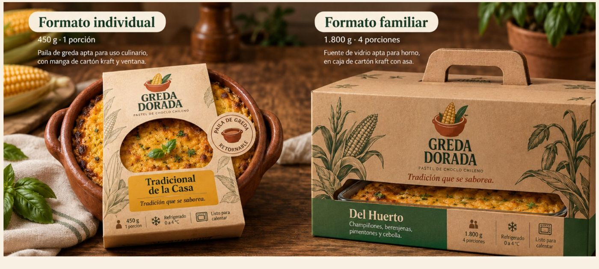

Projeto simulado
Tradicional da Casa
Tradición que se saborea.
Massa de choclo, carne bovina, frango, ovo, azeitonas, passas, cebola e manjericão.
450 g · 1 porção · 0 a 4 °C
Início / Embalagem
Paila de barro, papel kraft e um rótulo que se entende de relance. A embalagem faz parte da receita.

Todos os rótulos compartilham a mesma estrutura: nome, recheio, peso, conservação e aquecimento. Uma cor de destaque por variedade permite identificar o conteúdo antes de ler os detalhes.
Tradición que se saborea.
Massa de choclo, carne bovina, frango, ovo, azeitonas, passas, cebola e manjericão.
450 g · 1 porção · 0 a 4 °C
Tradición que se saborea.
Massa de choclo, carne bovina, ovo, azeitonas pretas, cebola e manjericão.
450 g · 1 porção · 0 a 4 °C
Vegetariana, sem carne
Massa de choclo, cogumelos, berinjela, pimentão, cebola e manjericão.
450 g · 1 porção · 0 a 4 °C
Paila de barro própria para uso culinário, com manga de papel kraft e janela que deixa ver a cobertura dourada. Um selo circular com o símbolo da marca identifica a paila retornável.
Travessa de vidro própria para forno, dentro de uma caixa de papel kraft com alça. Uma faixa verde manjericão carrega o nome da variedade.
Peso líquido: 450 g, uma porção.
Conservação: refrigerar entre 0 e 4 °C. Meta de 72 h desde o preparo.
Aquecimento: forno a 180 °C por 15 a 20 minutos, ou micro-ondas por 3 a 4 minutos.
Recipiente: paila de barro retornável. Lave e guarde para o próximo pedido.
Origem: elaborado em Pomaire, Região Metropolitana, no Projeto COIL, Duoc UC.

A paila e a travessa não são descartáveis. O retorno tem desconto no próximo pedido e um processo próprio: devolução, lavagem e inspeção. Acompanhamos a taxa de retorno, os usos de cada recipiente e as quebras.